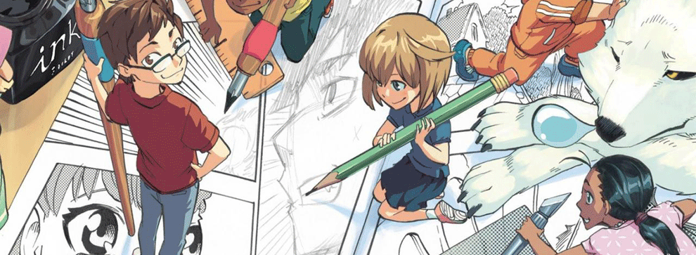

Futur orientation
Spécialitées pour les années avenir.
au lycée.
- art
- NSI
- anglais monde comptenporain
etudes superieur
Métier

compétences nécessaires
de nombreuses compétences sont nécessaires dans le monde du manga voici les principales :
- Savoir dessiner
- avoir une grande passion pour le manga
- etre curieux
- savoir faire par d'une grande originalité
- savoir parler japonais (pour mon cas) ou tres bien anglais
liens utiles
voici quelques liens de site plus spesialisés